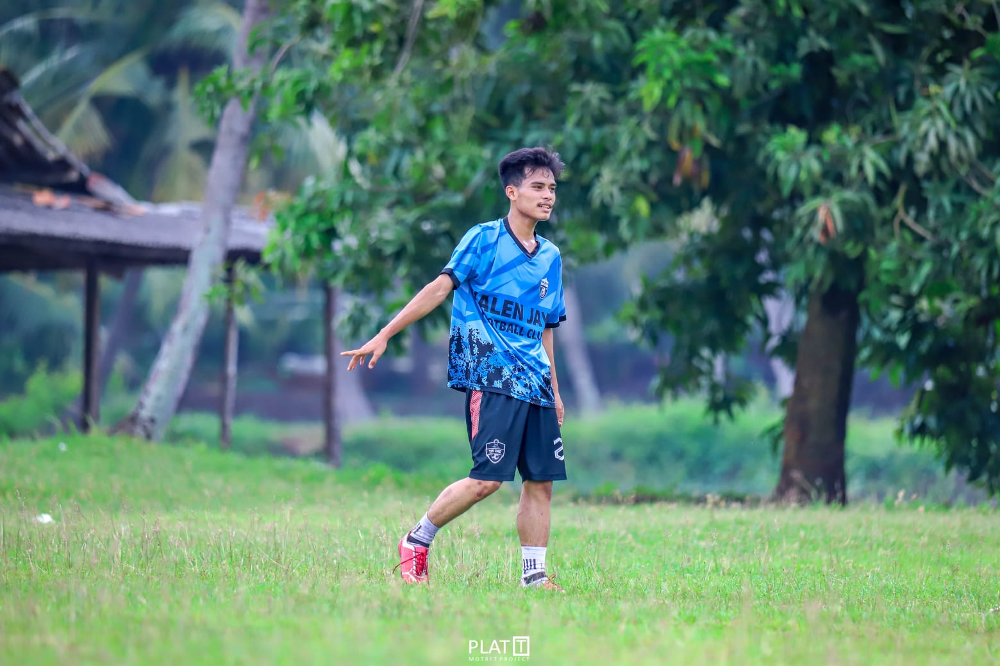
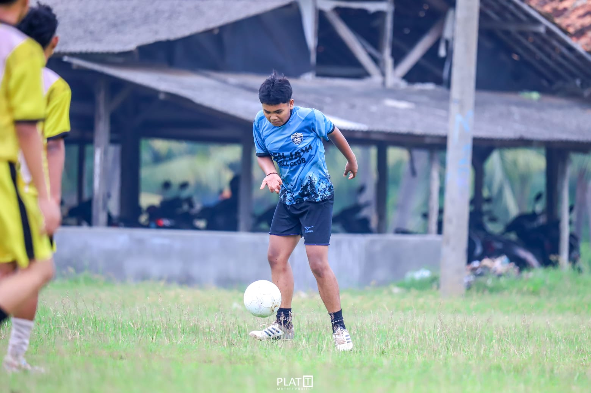
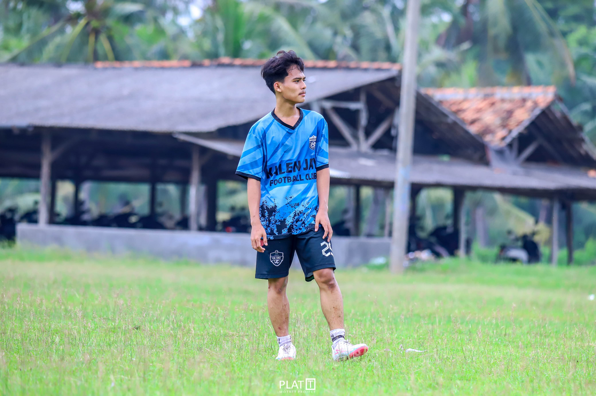
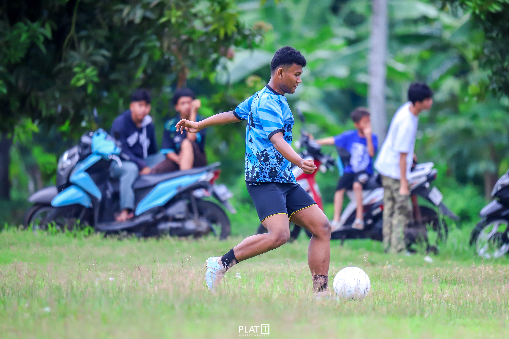
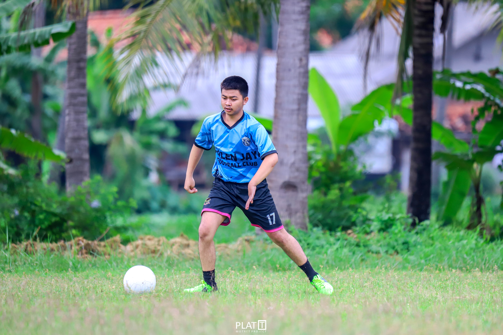
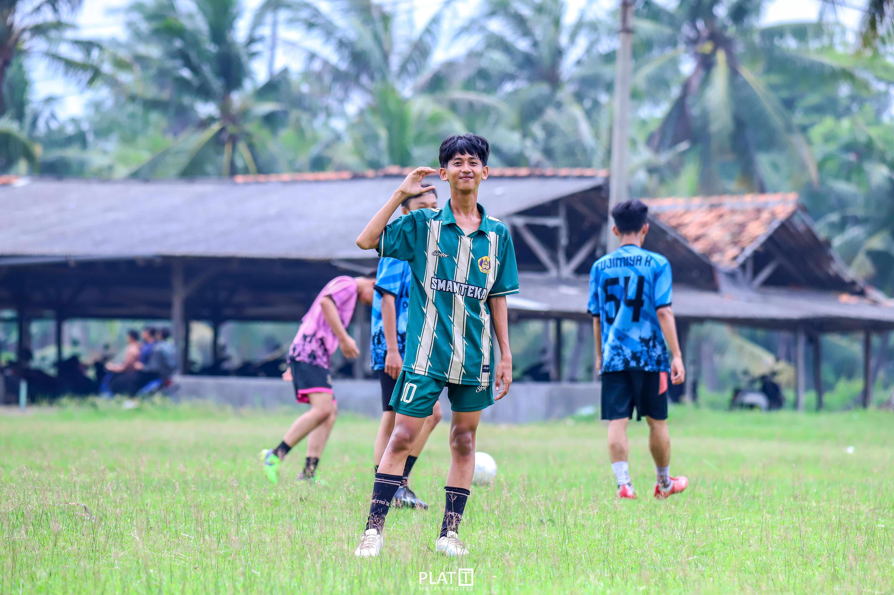
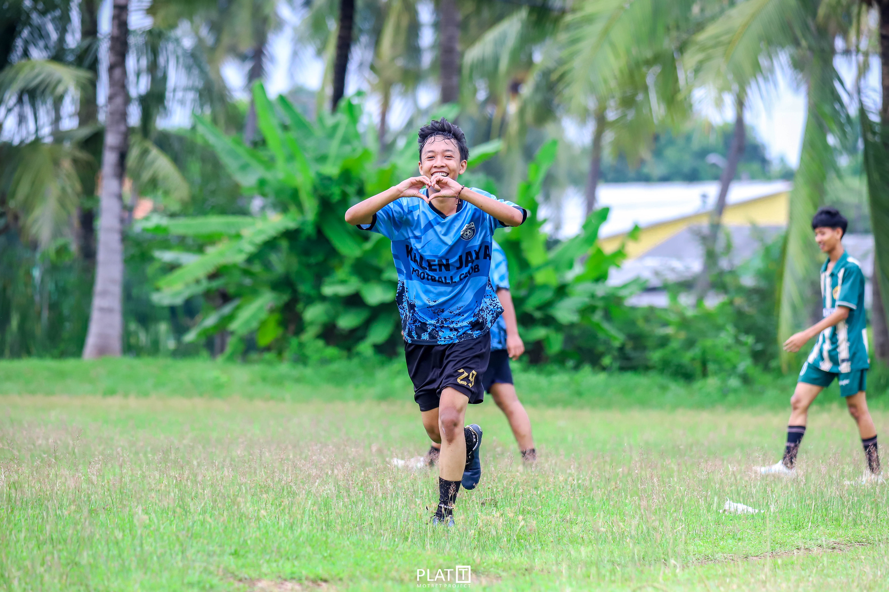
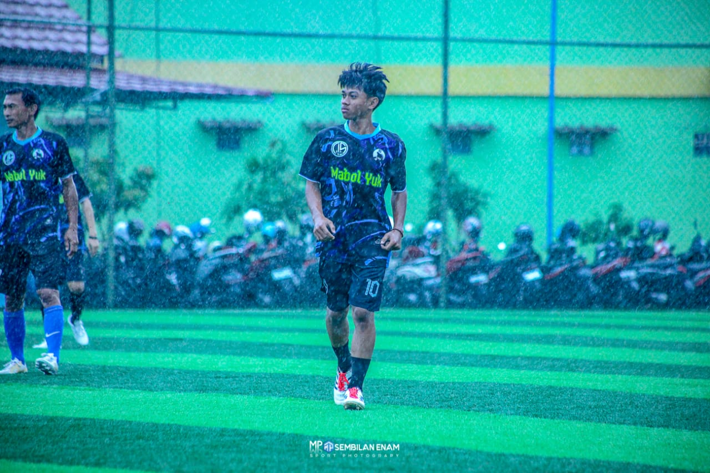
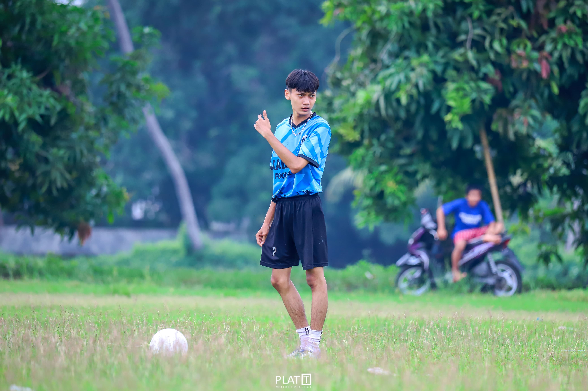
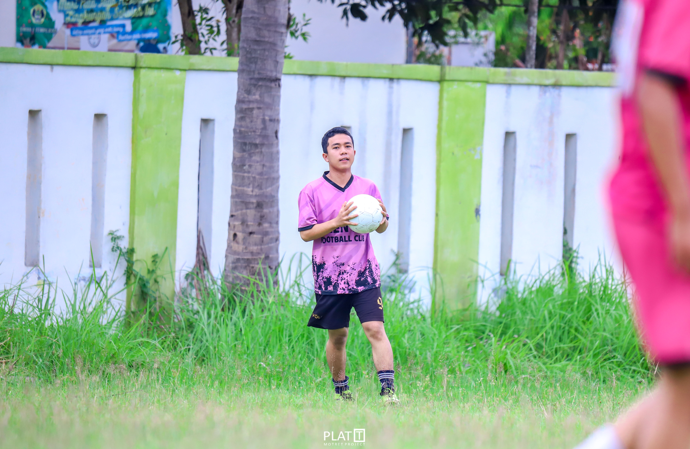

KALENJAYA FOOTBALL CLUB

Sebuah tim kecil yang berada di sebuah daerah pelosok yang tepatnya di daerah Kabupaten Karawang, Kecamatan tempuran.
Tim ini hanya terdiri anak-anak sekolahan yang memang sering main bermain bersama sedari waktu kecil hingga sekarang. Di tim ini tidak memiliki pelatih maupun pengurus, di dalam tim ini semua skill nya benar-benar skill asli dari mereka sendiri.
RIGHT DEFENDER

A'ing Mulyana
Dia bermain sebagai bek kanan dan lebih sering membantu pertahanan daripada melakukan overlap ke depan.
Gaya bermain dia cukup tenang ketimbang dengan para defender diluar sana, cara dia bermain lebih ke membayangi dan lebih ke mencuri bola dengan tenang, tidak dengan melakukan teckel
CENTER DEFENDER

LUKI
Dia bermain sebagai bek tengah yang selalu menjaga bagian lini pertahanan dengan cermat dan juga tenang.
Gaya bermain dia cukup unik, kenapa? karena, walaupun dia bermain sebagai lini pertahanan akan tetapi dia hampir tidak melakukan pressing terhadap lawan, akan tetapi, dia mampu merebut bola dari lawan dengan tenang, oleh karena itulah saya sebut gaya bermain dia cukup unik.
CENTER DEFENDER

FAIS
Dia bermain sebagai bek tengah dengan gaya bermain yang sedikit berkebalikan dengan Luki.
Kenapa dia bisa sedikit berkebalikan dengan Luki? karena, gaya bermain dia cukup tenang, akan tetapi dia memiliki body yang sangat kuat, oleh karena itu, gaya bermain dia cukup menyulitkan lawan karena pressing dia yang di bilang cukup kuat, hingga lawan kesusahan untuk menerobos pertahanan nya.
LEFT DEFENDER

AANG SURYANA
Dia bermain sebagai bek sayap yang memiliki gaya bermain sangat berkebalikan dengan A'ING Mulyana.
Karena, gaya bermain dia terbilang cukup kasar yang dimana hampir setiap lawan yang mencoba melewatinya itu dia teckel, hingga hampir semua lawan yang mencoba untuk melewatinyapun hampir tidak ada yang berhasil lewat karena gaya bermain nya, dia juga sering melakukan overlap ke depan, karena skill dribling dia sendiri terbilang cukup baik di bandingkan dengan bek yang lain.
CENTER MIDFIELD

GALANG FIRMANSYAH
Dia bermain sebagai gelandang tengah, akan tetapi dia lebih berfokus untuk membantu bagian pertahanan.
Karena dia memiliki fisik yang cukupkuat seperti Fais, dalam long pass dia terbilang bagus, karena sering tepat sasaran walaupun emang dia tidak memiliki dribling yang cukup bagus, akan tetapi dia memiliki fisik yang kuat hingga dia dapat melakukan pressing dan membayangi lawan dengan cukup kuat hingga mampu merebut bola di lini tengah, hingga mampu bekerja sama dengan pemain bertahan dengan baik.
CENTER MIDFIELD

WISNU
Dia bermain sebagai gelandang tengah, pemain kali ini bisa di bilang memiliki skill yang sangat standar.
Standar seperti, passing yang isa di bilang standar, dribling standar, power shot pun standar, akan tetapi, tanpa dia mungkin suasana di tim Kalenjaya FC tidak akan merasa tenang, ya, walaupun dia memiliki skill yang standar, tapi dia mampu membuat suasana tim menjadi tenang.
CENTER ATTACK MIEDFIELD

YAZID
Dia bermain sebagai gelandang serang, pemain kali ini mungkin adalah pemain terbaik di tim ini dalam hal kerja sama tim.
Ya, karena dia dapat mengarahkan teman-temannya untuk mengambil langkah yang bagus, tidak hanya soal passing tentang, dia memiliki dribling yang sangat bagus, hingga dia dapat melewati lawan dengan baik, dan bukan tentang dribling, walaupun dia memiliki power shot yang standar, akan tetapi akurasi tendangan yang dia miliki mungkin adalah yag terbaik di tim ini.
RIGHT WING

KEVIN ALAMSYAH
Dia bermain sebagai sayap kanan, pemain ini adalah pemain yang memiliki dribling yang standar, power shot standar, tapi mematikan.
Ya, karena dia si pencari ruang kosong, pemosisian dia sangat bagus, walaupun dengan dribling yang standar dan power shot yang standar, dia mampu mencetak gol dengan memanfaatkan ruang atau celah kecil yang ada di antara pemain bertahan lawan, mungkin pemain kali ini dapat menjadi contoh bagi kita yang hanya memiliki skill standar, dia tetap tenang di tengah permainanan hingga mampu menciptakan peluang mencetak gol walaupun dia tidak memiliki skill yang lebih seperti Yazid.
LEFT WING

RIZKI ABDUL GANI
Dia pemain yang cukup menawan dengan dribling yang dia miliki dan memiliki akurasi yang cukup tinggi.
Rzki, dia memang meiliki dribling yang bagus, oleh karena itu dirinya terlalu berambisi untuk melewati lawan dengan skill nya, tapi, dia juga mampu bekerja sama sebagai tim, walaupun cuma sesekali karena termakan ambisinya untuk melewati lawan seorang diri, akan tetapi, jika dia sudah mendapat peluang chooting, dia mampu melakukan tembakan dengan akurasi yang cukup tinggi hingga membuat kiper lawan cukup kesulitan.
STRIKER

YOGA KURNIAWAN
Striker utama tim Kalenjaya FC, mungkin dia adalah pemain yang memiliki power shoot terkuat di timnya.
Dia dengan power shootnya, memiliki insting mencetak goal yang sangat tinggi, karena, setiap dia melihat peluang untuk shooting dia pasti langsung shooting ke arah gawang dengan keras, mungkin dia memang tidak memiliki akurasi yang tinggi seperti Rizki maupun Yazid, tapi, dengan powernya, dia berhasil menjalankan tugasnya sebgai ujung tombak tim Kalenjaya FC
GOALKEEPER
